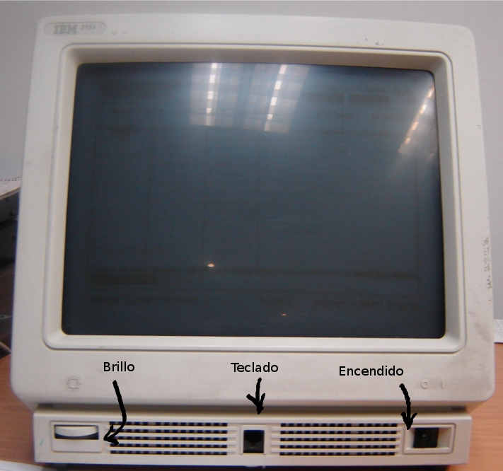
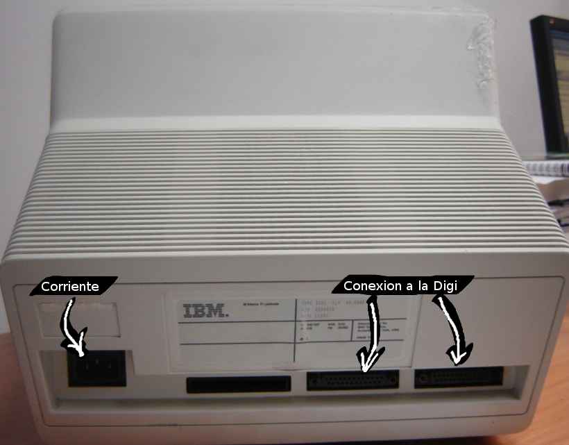

Configuración de Terminal 3151
Las terminales 3151 cuentan con una entrada frontal para el teclado, el cable es muy parecido al de un cable telefónico, del lado izquierdo se encuentra el control de brillo, asegurate de que esté en un punto medio cuando prendas la terminal; del lado derecho se encuentra el switch para prender la terminal.
En la parte trasera de la terminal del lado izquierdo encontrarás una entrada para el cable de corriente que alimenta a la terminal y del lado derecho un cable plano y grueso que va conectado hacia tu computadora, éste cable le proporciona la señal de las imagenes, por lo que es importante que este cnectado.
